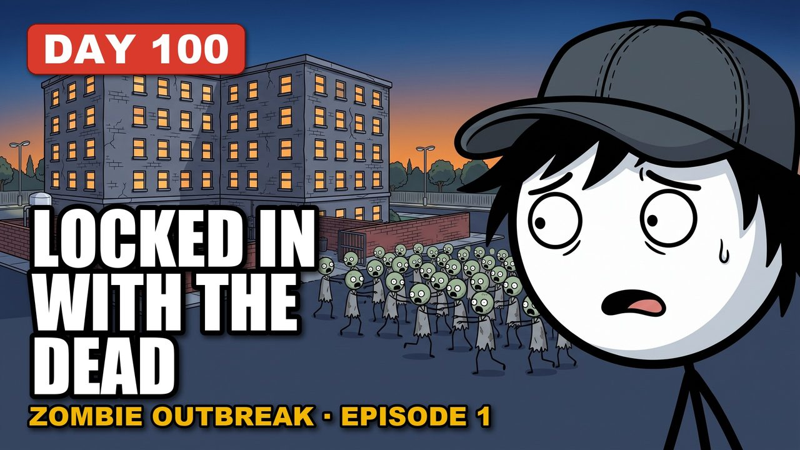

Zombie Outbreak: Survive 100 Days Trapped In A Hospital
You're the night engineer at a 180 bed hospital when the outbreak reaches the emergency department just before midnight. By morning the grid is gone, the dead are on the wards above you, and you have one diesel generator, one lit floor and a fuel gauge you can't fully trust.
Uploaded Oct 16, 2026 · 11:01 · 18 chapters
Chapters (18)
- Day 0: The Plant Room
- Day 1: One Floor
- Day 2: Water
- Day 4: The Sealed Ward
- Day 7: Noise
- Day 10: Gravity
- Day 14: The Filter
- Day 21: The Fridge
- Day 30: Oxygen
- Day 38: The Pull Station
- Day 45: Two Mouths
- Day 50: Hands
- Day 60: The Idle
- Day 70: The Signal
- Day 80: The Stick
- Day 90: The Test
- Day 96: The Last Inches
- Day 100: The Hum
What is real in this story (8 sourced facts)
- Hospital emergency power must come back within 10 seconds of a grid failure (NFPA 110 and NFPA 99). NFPA ↗
- Hospitals plan to stand alone for days on site fuel; about 96 hours is the common planning target. CMS ↗
- City water needs electric pumps, plan on about one gallon per person per day, and water left in the pipes drains to the lowest open tap. Ready.gov ↗
- Fill clean containers while the water still runs. CDC ↗
- Insulin, many vaccines and some liquid antibiotics must stay between 36 and 46 degrees Fahrenheit. CDC ↗ FDA ↗
- In a disaster you send scarce resources where they change the outcome (crisis standards of care). National Academies ↗
- Clean a cut with clean water and soap, cover it, and watch for spreading redness, heat or pus. Mayo Clinic ↗
- Scrub hands with soap for at least 20 seconds, before eating and after touching anything dirty. CDC ↗
Also real: Diesel sludge clogs filters, a fuel gauge float can lie (dip the tank with a stick), oxygen makes fire burn hotter, a V on the ground means “need help” to rescuers, and a standby generator gets about three cranks from its own battery.
This is a fictional animated story. The zombies are made up; the survival science is real.